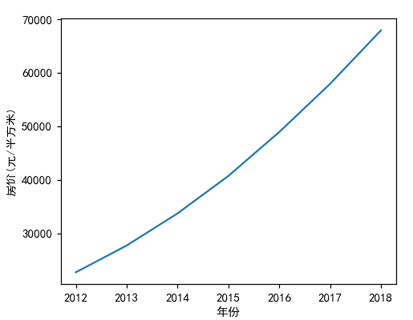

03-极限导数和微积分
极限¶
\lim_{x\to x_0} f(x)
1 2 3 | |
\lim_{x\to 0} \dfrac {\sin x}{x}
1 | |
\lim_{x\to \infty} x
1 | |
\lim _{x\rightarrow \infty }\dfrac {1}{x}
1 | |
\lim _{x\rightarrow \infty }x^{2}
1 | |
左极限和右极限¶
\lim_{x\to x_0^+} f(x),\hspace{1cm}\lim_{x\to x_0^-} f(x)
1 2 | |
导数 (derivative)¶
导数就是变化率 $$ y=x^{2} $$
1 2 3 | |

### 导数的求导公式
高等数学真题 (同济大学高等数学)¶
第二章习题
1 2 3 4 5 | |
导数的实际意义¶
多阶导数/高阶导数¶
多阶导数就是导数的导数
位移的一阶导数是速度，二阶导数是加速度，三阶导数（F=ma）就是力的变化率了，四导就要找到力产生的原因的变化率。
- sin(2x)的二阶导数
1 | |
- sin(2x)的三阶导数
1 | |
- 用数学的观点看新闻, 新闻要对比着看才有趣.
发改委期待: 房价需要被控制在7000以内, 从2006年开始,曲线不得抬头.让房价的一阶导数小于等于零
发改委期待, 房价虽然上涨,但是看斜率, 让房价的二阶导数小于零,房价上涨的速度变慢了, 我们遏制房价过快上涨的速度,房价可以涨,但上涨的速度要越来越慢

势头这个词用的好! 势头的意思就是速度的速度,可以理解成加速度 ,让房价增长速度的加速度变小,
房价的三阶导数小于0. 如上走势图, 我们开心的看到,房价上涨的速度的加速度真的变小了.
积分 Integrals¶
积分是求导的逆运算, 已知速度,求距离. 已知加速度,求某个时间段的速度 $$ \int_{-\infty}^{\infty} f(x) dx $$
1 2 3 | |
某个区间的积分 $$ \int_{a}^{b} f(x) dx $$
1 2 3 4 5 | |